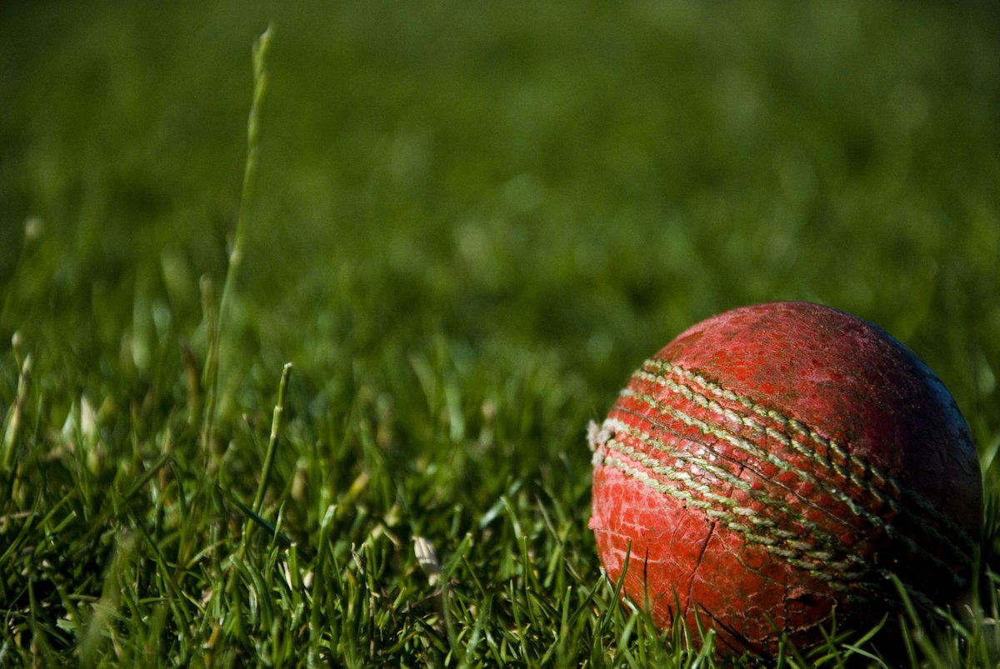

ক্রিকেটের প্রাথমিক পাঠ: নতুনদের জন্য নিয়মাবলী ও ব্যাটিং-বোলিংয়ের সহজ টিপস
Category: cricket | Language: bn
ক্রিকেট ভারতের শুধু একটি জনপ্রিয় খেলা নয়, এটি একটি আবেগ। আপনি যদি এই খেলার জগতে একদম নতুন হন এবং বুঝতে না পারেন যে কীভাবে শুরু করবেন, তবে এই নির্দেশিকাটি আপনার জন্য সহায়ক হবে। ক্রিকেট মূলত এগারো জন খেলোয়াড়ের দুটি দলের মধ্যে খেলা হয়। এর মূল উদ্দেশ্য হলো নির্দিষ্ট ওভারের মধ্যে বিপক্ষ দলের চেয়ে বেশি রান করা। এই নিবন্ধে আমরা ক্রিকেটের মৌলিক নিয়ম, ব্যাটিং ও বোলিংয়ের প্রাথমিক কৌশল এবং মাঠে নামার আগে প্রয়োজনীয় সুরক্ষা সর্তকতা নিয়ে বিস্তারিত আলোচনা করব, যা আপনাকে একজন দক্ষ খেলোয়াড় হয়ে উঠতে সাহায্য করবে।
খেলার মূল কেন্দ্রবিন্দু হলো মাঠের মাঝখানে থাকা ২২ গজের একটি আয়তকার অংশ, যাকে 'পিচ' বলা হয়। পিচের দুই প্রান্তে তিনটি করে কাঠের লাঠি বা 'স্টাম্প' থাকে, যার উপরে দুটি ছোট কাঠ বা 'বেল' রাখা হয়। ব্যাটিং দলের লক্ষ্য হলো ব্যাট দিয়ে বলকে আঘাত করা এবং পিচের এক প্রান্ত থেকে অন্য প্রান্তে দৌড়ে রান সংগ্রহ করা। যদি বলটি মাটি ছুঁয়ে বাউন্ডারি লাইনের বাইরে চলে যায় তবে চার রান এবং সরাসরি সীমানার ওপারে গিয়ে পড়লে ছয় রান পাওয়া যায়। অন্যদিকে, ফিল্ডিং দল বা বোলিং পক্ষ চেষ্টা করে যাতে ব্যাটসম্যান রান না করতে পারে এবং যত দ্রুত সম্ভব তাকে আউট করা যায়।
একজন ব্যাটসম্যানকে আউট করার বেশ কিছু নির্দিষ্ট নিয়ম বা পদ্ধতি আছে যা নতুনদের জেনে রাখা অত্যন্ত জরুরি। সবথেকে সাধারণ পদ্ধতি হলো 'বোল্ড', যেখানে বোলার বল ছুড়লে তা সরাসরি স্টাম্পে আঘাত করে এবং বেল ফেলে দেয়। এছাড়া ব্যাটসম্যানের মারা বল মাটিতে পড়ার আগে কোনো ফিল্ডার ক্যাচ ধরলে তিনি আউট হন। 'এলবিডব্লিউ' (LBW) বা লেগ বিফোর উইকেট হলো এমন একটি নিয়ম যেখানে বলটি সরাসরি স্টাম্পে লাগত, কিন্তু ব্যাটসম্যানের পায়ে লেগে তা বাধা পায়। এছাড়া রান নেওয়ার সময় ব্যাটসম্যান ক্রিজে পৌঁছানোর আগেই ফিল্ডার যদি বল দিয়ে স্টাম্প ভেঙে দেন, তবে তাকে 'রান আউট' বলা হয়।
ব্যাটিং শেখার প্রথম ধাপ হলো ব্যাট ধরার সঠিক পদ্ধতি বা 'গ্রিপ'। আপনার দুই হাতের বুড়ো আঙুল এবং তর্জনী মিলে একটি 'V' আকৃতি তৈরি করবে যা ব্যাটের হাতলের মাঝ বরাবর থাকবে। দাঁড়ানোর ভঙ্গি বা 'স্ট্যান্স' হতে হবে আরামদায়ক; দুই পা কাঁধের সমান দূরত্বে রেখে পিচের সমান্তরালে দাঁড়াতে হবে। নজর রাখতে হবে বোলারের হাতের ওপর। ব্যাটিংয়ের সময় মাথা স্থির রাখা খুব প্রয়োজন। মনে রাখবেন, বল ডেলিভারি হওয়ার শেষ মুহূর্ত পর্যন্ত বলের গতির ওপর নজর রাখা সফল ব্যাটিংয়ের চাবিকাঠি। শুরুতে বড় শট খেলার চেয়ে বলটি ব্যাটের মাঝখানে লাগানোর অভ্যাস করা বেশি জরুরি।
বোলিংয়ের ক্ষেত্রে প্রধান নিয়ম হলো কনুই সোজা রেখে বল ছোড়া। আন্তর্জাতিক নিয়ম অনুযায়ী, যদি বল করার সময় কনুই ১৫ ডিগ্রির বেশি বেঁকে যায়, তবে তাকে 'চাকিং' বলা হয় এবং সেটি অবৈধ বা 'নো-বল' হিসেবে গণ্য হয়। বোলিং মূলত দুই ধরণের হয়— পেস (দ্রুত গতি) এবং স্পিন (ঘূর্ণি)। পেস বোলাররা গতির ওপর নির্ভর করেন এবং বলকে বাতাসে বা পিচে ফেলে সুইং করানোর চেষ্টা করেন। অন্যদিকে, স্পিনাররা আঙুল বা কবজির মোচড়ে বলকে পিচে ফেলে দিক পরিবর্তন করানোর চেষ্টা করেন। নতুন বোলারদের উচিত প্রথমে সঠিক লাইন এবং লেংথ বজায় রাখার দিকে নজর দেওয়া, কারণ নিয়ন্ত্রণ ছাড়া শুধু গতি কোনো কাজে আসে না।
একটি বাস্তব উদাহরণ দিয়ে বিষয়টি বোঝা যাক। ক্রিকেটে ছয়টি বৈধ বল নিয়ে একটি 'ওভার' সম্পন্ন হয়। ধরুন একটি ওভারে বোলার প্রথম চারটি বল 'ডট' (কোনো রান নেই) দিলেন, পঞ্চম বলে ব্যাটসম্যান একটি বাউন্ডারি মারলেন এবং শেষ বলে দৌড়ে একটি সিঙ্গেল নিলেন। এইভাবে এক ওভার শেষে ব্যাটিং দল ৫ রান সংগ্রহ করল। যদি বোলার পিচের নির্দিষ্ট সীমার বাইরে বল করেন, তবে তাকে 'ওয়াইড' বা 'নো-বল' বলা হয়। এর ফলে ব্যাটিং দল অতিরিক্ত ১ রান পায় এবং বোলারকে সেই বলটি পুনরায় করতে হয়। এইভাবে প্রতিটি ওভার শেষে ফিল্ডিং দল তাদের বোলিং প্রান্ত পরিবর্তন করে এবং অন্য একজন বোলার নতুন ওভার শুরু করেন।
ক্রিকেট বল বেশ শক্ত হয়, তাই নিরাপত্তার সরঞ্জাম ব্যবহার করা বাধ্যতামূলক। যারা প্রথম খেলা শুরু করছেন, তাদের জন্য একটি ভালো মানের হেলমেট, প্যাড, গ্লাভস এবং অ্যাবডোমেন গার্ড বা এল-গার্ড থাকা অত্যন্ত প্রয়োজন। বিশেষ করে লেদার বলে খেলার সময় এই সুরক্ষা সরঞ্জাম ছাড়া মাঠে নামা অত্যন্ত ঝুঁকিপূর্ণ এবং বড় ধরণের চোটের কারণ হতে পারে। শুরুতেই খুব দামি কিট কেনার প্রয়োজন নেই, তবে সরঞ্জামগুলো যেন মানসম্মত এবং আপনার শরীরের মাপ অনুযায়ী সঠিক হয়, তা নিশ্চিত করুন। সঠিক মাপের জুতো বা স্পাইক পরাও জরুরি যাতে দৌড়ানোর সময় পিচে পিছলে না যান।
নতুন খেলোয়াড়রা প্রায়ই কিছু সাধারণ ভুল করে থাকেন যা তাদের উন্নতিতে বাধা দেয়। যেমন, ব্যাটিং করার সময় বলের পিচ বা ড্রপ না দেখেই আগেভাগে শট খেলার চেষ্টা করা। ফিল্ডিংয়ের সময় বলের দিকে সরাসরি না তাকিয়ে হাত সরিয়ে নেওয়া একটি বড় ভুল যা থেকে চোট লাগতে পারে। বোলিংয়ের সময় অনেকে খুব দ্রুত দৌড়ে এসে ভারসাম্য হারিয়ে ফেলেন, ফলে বলের নিয়ন্ত্রণ থাকে না। এই ভুলগুলো এড়াতে হলে অনুশীলনের সময় ধৈর্য ধরতে হবে। সব সময় মনে রাখতে হবে, ক্রিকেট একটি দলগত খেলা, তাই নিজের ব্যাটিং বা বোলিংয়ের পাশাপাশি ফিল্ডিং এবং সতীর্থদের সাথে সমন্বয়ের দিকেও সমান গুরুত্ব দিতে হবে।
ক্রিকেটে দক্ষ হতে হলে তাত্ত্বিক জ্ঞানের পাশাপাশি নিয়মিত মাঠের অনুশীলনের কোনো বিকল্প নেই। আপনার প্রথম পদক্ষেপ হতে পারে কাছাকাছি কোনো ক্রিকেট কোচিং একাডেমিতে ভর্তি হওয়া অথবা বন্ধুদের সাথে টেনিস বলে খেলা শুরু করা। টেনিস বল দিয়ে খেললে চোট পাওয়ার ভয় কম থাকে এবং বলের মুভমেন্ট বুঝতে সুবিধা হয়। ধীরে ধীরে নিয়মগুলো রপ্ত করুন এবং পেশাদারদের খেলা দেখে শেখার চেষ্টা করুন। মনে রাখবেন, ক্রিকেটে সাফল্য পেতে হলে সঠিক কৌশল, শৃঙ্খলা এবং প্রচুর ধৈর্য প্রয়োজন। আজই একটি ব্যাট আর বল নিয়ে মাঠে নেমে পড়ুন এবং এই রোমাঞ্চকর খেলার আনন্দ উপভোগ করুন।